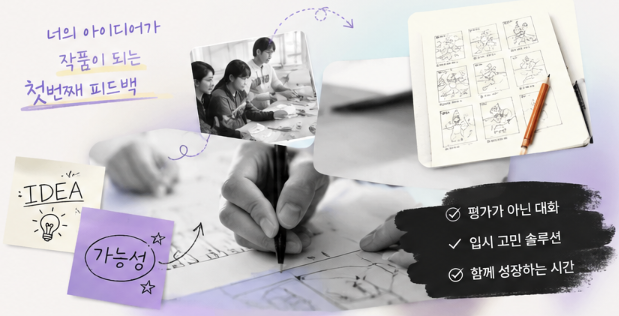

Feedback Day
피드백 데이
💡 평가가 아닌 가능성의 발견.
서울예술대학교 공식 6개 학부 15개 전공 교수진이 여러분의 미완성 초안을 1:1로 직접 마주하며, 작품의 독창적 가치와 성장 가능성을 함께 발굴합니다.

Feedback Day
💡 평가가 아닌 가능성의 발견.
서울예술대학교 공식 6개 학부 15개 전공 교수진이 여러분의 미완성 초안을 1:1로 직접 마주하며, 작품의 독창적 가치와 성장 가능성을 함께 발굴합니다.

클릭 시 상세 접수 프로세스 확인
01. 초안 제출
02. 1:1 멘토링
03. 아이디어 확장
04. 로드맵 확립
원하는 과를 클릭하시면 교수진 피드백 핵심을 즉시 열람합니다.
• Q. 낙서 수준 초고도 진짜 괜찮나요?
• Q. 한국음악과는 퓨전만 받나요?
• Q. 참여 비용이나 다른 조건이 있나요?
답변 전체 읽기 및 질문란 크게 보기
학부 탭을 선택하고 카드를 클릭하면 상세한 비포&애프터가 제공됩니다.